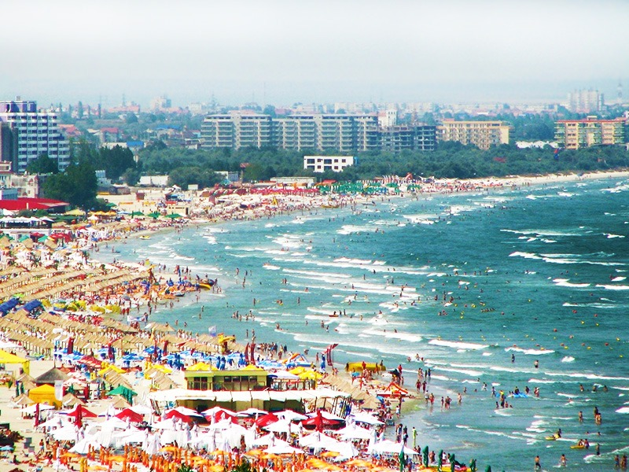

About the Romanian seaside
The Romanian seaside is one of the most spectacular region of our country, offering amazing landscapes. With a total length of 245 kilometers, the Romanian coast stretches from the north, from the border with Ukraine, to the south, to the border with Bulgaria, delimiting the east of Dobrogea with the waters of the Black Sea. On more than half of its length (163 km), from the northern extremity to near Navodari, the Romanian coast is dominated by the Danube Delta and the coastal lakes. Starting from the area of Cape Midia (Navodari) and up to Vama Veche (border with Bulgaria), the beaches with fine sand dominate the Romanian coast. This part of the coast extends over a distance of 82 kilometers and is the most frequented area by tourists. The temperate climate, the water with low salinity and the orientation of the beach towards the east create excellent conditions for spending a summer vacation in the best conditions on the Romanian coast. The beaches on the Romanian coast are covered with fine sand and have a generous width that reaches 150 - 200 meters in some places. However, there is a noticeable difference between the beaches on the north coast (Navodari, Mamaia, Constanta) and the beaches on the south. The northern ones are wider and keep a uniform shoreline, while the sandy stretches of the southern coastline have many narrower sectors, are bordered by bays or bordered by high cliffs. On the Romanian coast the sun shines about 2,500 hours per year, average identical to that of the beaches in Croatia and very similar to that of the Mediterranean coasts. The Romanian seaside offers multiple accommodation options. Tourists have at their disposal over 250,000 places of accommodation in hotels, villas and guesthouses in the 12 seaside resorts: Navodari, Mamaia, Eforie Nord, Eforie Sud, Techirghiol, Costinesti, Olimp, Neptun, Jupiter, Cape Aurora, Venus, Saturn, Mangalia, to which is added May 2 and Vama Veche, but unofficially. On the coast there are plenty of entertainment and leisure opportunities that cover the preferences and requirements of all tourists who spend their vacation here. In recent years, along the coast have been developed numerous restaurants and terraces arranged on the beach or in the immediate vicinity of it, giving tourists the opportunity to relax in a cheerful holiday atmosphere and to enjoy Romanian dishes, international or fishery. Also, the Romanian coast offers opportunities to practice all water sports, each resort having modern recreational bases. The leisure options on the coast are supplemented by tennis, football and golf courses, amusement parks and entertainment centers that are frequently found in resorts. The fun possibilities are completed by the recent tourist constructions in the Mamaia resort, of which we mention the most important ones: Aqua Magic and Telegondola. Not only the long and sunny beaches, easy accommodation and leisure opportunities make the Romanian coastline attractive! In the area there are plenty of sights and tourist attractions that are worth visiting. Museums, historical monuments of great significance, ancient ruins, churches, monasteries, unique nature reserves in the country and in Europe and many other attractions complete the picturesque Romanian coastline and the land of Dobrogea.